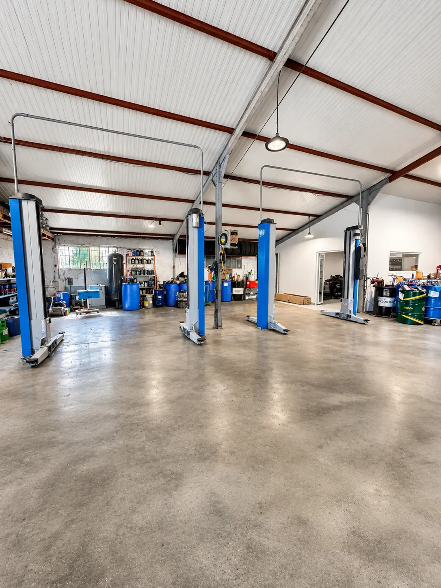
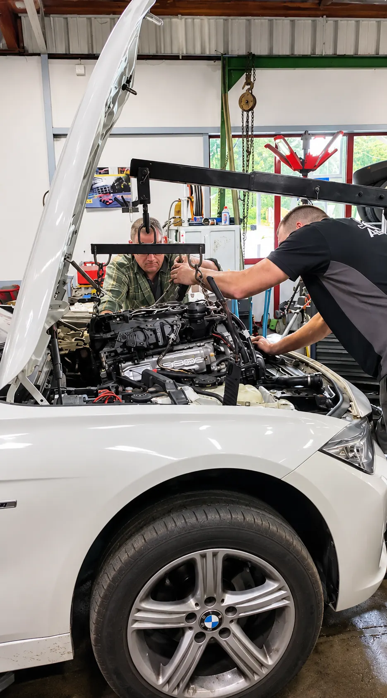

Garage automobile · Le Pian-sur-Garonne
JRM Autos, votre garage de confiance.
Au Pian-sur-Garonne, JRM Autos assure l'entretien, la réparation et le diagnostic de véhicules légers pour les particuliers et les professionnels de Gironde, avec un savoir-faire reconnu sur BMW.
Notre nouvelle façade
Bienvenue chez JRM Autos
Un garage de proximité, une image renouvelée
Créé en 2014 et dirigé par Jérémy Roynette, JRM Autos accueille ses clients au 482 avenue des Coteaux, au Pian-sur-Garonne. Notre nouveau bâtiment, aux couleurs bleu et blanc de la marque, reflète ce que nous voulons offrir : un service sérieux, moderne et accessible.
- Entretien et réparation de véhicules légers
- Particuliers et professionnels
- Un atelier équipé et organisé
- Un interlocuteur direct pour chaque intervention
Nos prestations
Tout pour votre véhicule, au même endroit
De la révision courante aux démarches administratives, JRM Autos vous accompagne tout au long de la vie de votre voiture.
Mécanique et entretien
Révisions, vidanges, freinage, distribution, embrayage : l'entretien courant et les réparations mécaniques de votre véhicule.
Découvrir → /02
/02Diagnostic automobile
Voyant allumé, perte de puissance, panne électronique : nous identifions l'origine du problème avant d'intervenir.
Découvrir → /03
/03Carrosserie
Chocs, rayures, éléments endommagés : nous remettons votre véhicule en état avec soin.
Découvrir →/04Vitrage automobile
Pare-brise fissuré ou impacté, vitre endommagée : réparation ou remplacement de vos vitrages.
Découvrir →/05Carte grise
Achat, vente, changement d'adresse : nous vous accompagnons dans vos démarches d'immatriculation.
Découvrir →Gardiennage
Une solution pour stocker votre véhicule en toute sérénité, sur demande.
Découvrir →/07Prêt de véhicule
Pour rester mobile pendant l'intervention sur votre voiture, selon disponibilités et conditions.
Découvrir →Spécialisation BMW
Le savoir-faire BMW d'un garage indépendant
Les BMW demandent rigueur, méthode et connaissance de leurs spécificités techniques. C'est un domaine que JRM Autos maîtrise et met au service des propriétaires de BMW en Gironde.
JRM Autos est un garage indépendant. Il n'est ni agréé ni mandaté par BMW AG. BMW est une marque déposée de BMW AG, citée uniquement pour désigner les véhicules sur lesquels nous intervenons.

Nos réalisations
L'atelier en images
Interventions, équipements et nouveau bâtiment : découvrez le quotidien de JRM Autos.
Infos pratiques
Nous trouver
Au cœur du Pian-sur-Garonne, en Gironde. Appelez-nous pour prendre rendez-vous.
Coordonnées
- Téléphone05 56 63 03 84
- E-mailjrm.autos33@gmail.com
Horaires d'ouverture
Horaires
| Lundi | 08h30 – 12h00 14h00 – 18h30 |
|---|---|
| Mardi | 08h30 – 12h00 14h00 – 18h30 |
| Mercredi | 08h30 – 12h00 14h00 – 18h30 |
| Jeudi | 08h30 – 12h00 14h00 – 18h30 |
| Vendredi | 08h30 – 12h00 14h00 – 18h00 |
| Samedi | Fermé |
| Dimanche | Fermé |
Horaires habituels, susceptibles d'évoluer les jours fériés.